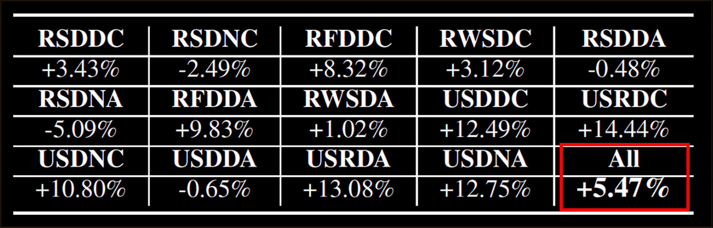

As autonomous driving technology matures, end- to-end methodologies have emerged as a leading strategy, promising seamless integration from perception to control via deep learning. However, existing systems grapple with challenges such as unexpected open set environments and the complexity of black-box models. At the same time, the evolution of deep learning introduces larger, multimodal foundational models, offering multi-modal visual and textual understanding. In this paper, we harness these multimodal foundation models to enhance the robustness and adaptability of autonomous driving systems. We introduce a method to extract nuanced spatial fea- tures from transformers and the incorporation of latent space simulation for improved training and policy debugging. We use pixel/patch-aligned feature descriptors to expand foundational model capabilities to create an end-to-end multimodal driving model, demonstrating unparalleled results in diverse tests. Our solution combines language with visual perception and achieves significantly greater robustness on out-of-distribution situations.
We present a case study focused on policy debugging through language-augmented latent space simulation. Our procedure is as follows: (i) we consult Large Language Models (LLMs) to generate a base set of natural language concepts relevant to, for example, a rural driving scenario; (ii) we collect driving policy rollouts along with intermediate features, filtering out less pertinent concepts based on similarity statistics, and potentially human judgment; (iii) we then evaluate the policy by replacing image pixel features with textual features drawn from various subsets of these relevant concepts; (iv) lastly, we pinpoint specific concepts whose presence across subsets leads to significant performance changes.
We showcase the performance improve- ments achieved through data augmentation using language- augmented latent space simulation. Our procedure is as follows: (i) We first identify a set of target concepts likely to appear in the training data that are candidates for replacement, selecting Tree and Dark for this experiment; (ii) We then consult LLMs to suggest possible replacement concepts; in this experiments, they are broadly defined as any non-drivable objects or entities likely to appear in a driving scenario; (iii) Finally, we randomly swap image pixel features—those exhibiting high similarity to the target concepts—with the textual features corresponding to these suggested replacement concepts.
Improved generalization from data augmentation. We augment training with unseen yet potentially relevant concepts from LLMs via language-augmented latent space simulation to improve performance. The labels are the scenarios in Tab. I in the paper (RSDDC is Rural, Spring, Dry, Day, Car).
The tests were carried out within a rural test track during the summer season and spanned various times of the day. Importantly, the evaluation took place on different road segments and occurred two years subsequent to the summer data used in the training set, allowing us to assess performance amid noticeable changes in the environment. To further showcase the generalization ability of leveraging representations from the foundation models, we test the model on objects that are not seen at all during the training.